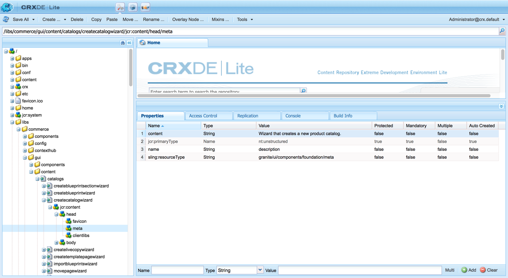

Issue Modified 04-16-2020 - 16:35
Create catalog wizard page loads as a blank white page. Viewing the page source shows that HTML content has been partially generated and a broken script tag can be observed.
Environment
AEM 6.2 SP1
Cause
HTML content generated a </s<> instead of </script> which causes downstream buffer issues while generating the body content of the page.
There is a buffer issue. The exact cause has not been pinpointed regarding why this occurs.
Resolution

Modify the headers of the page and add bogus tags that will move the buffer out of the script tag.
Steps:
- Use CRX/DE LITE, add a <meta/> tag to the /libs/commerce/gui/content/catalogs/createcatalogwizard/jcr:content/head node as shown in the attached image, screenshot-1.png (also embedded below). This change will add a metadata tag to the HTML generated:<meta name="description" content="Wizard that creates a new product catalog." />
- Make sure the meta tag is placed before the clientlibs node as shown in screenshot-1.png
- Test the Create Catalog page http://<host>:<port>/mnt/overlay/commerce/gui/content/catalogs/createcatalogwizard.html

Internal Notes
[1] https://daycare.day.com/home/logotechcom/logotechcom_ch/managed_services/150913.html
[2] https://jira.corp.adobe.com/browse/NPR-24452